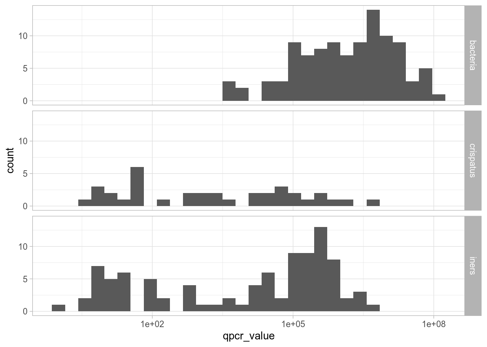
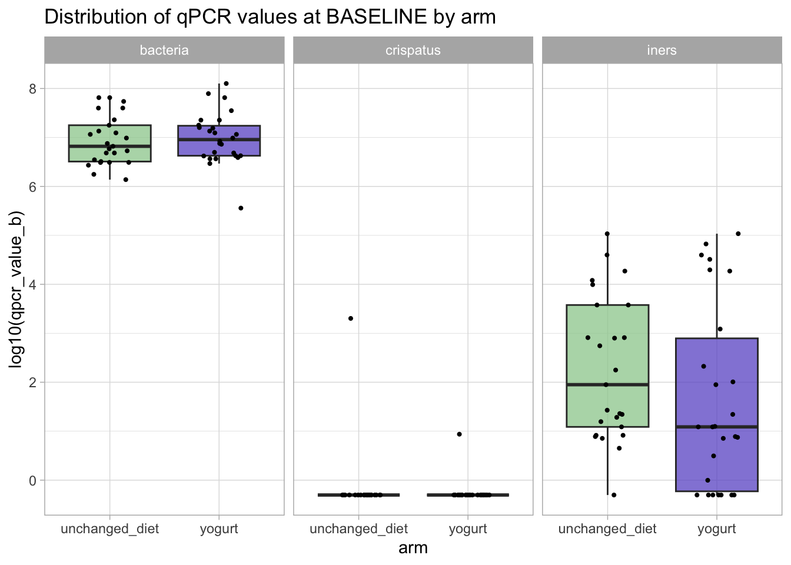
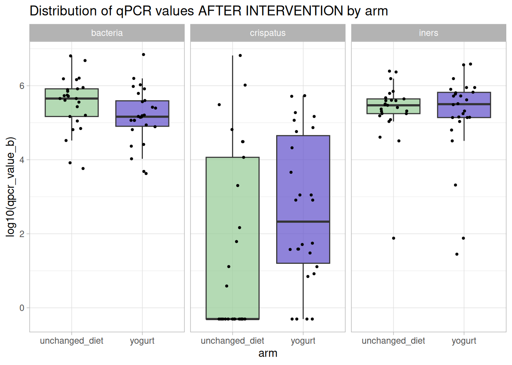
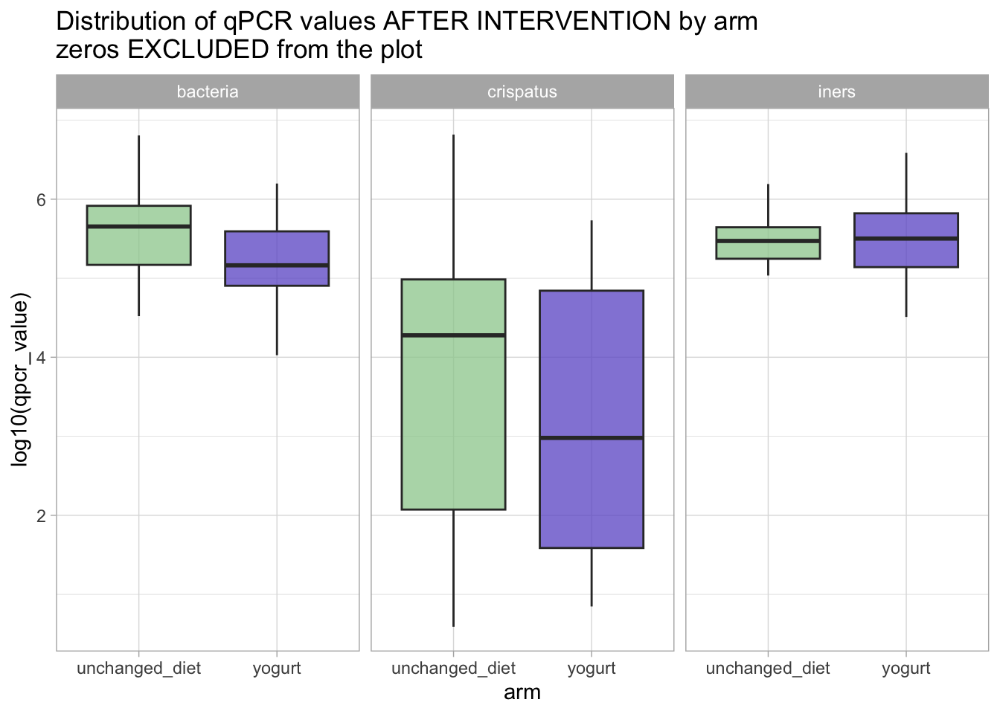
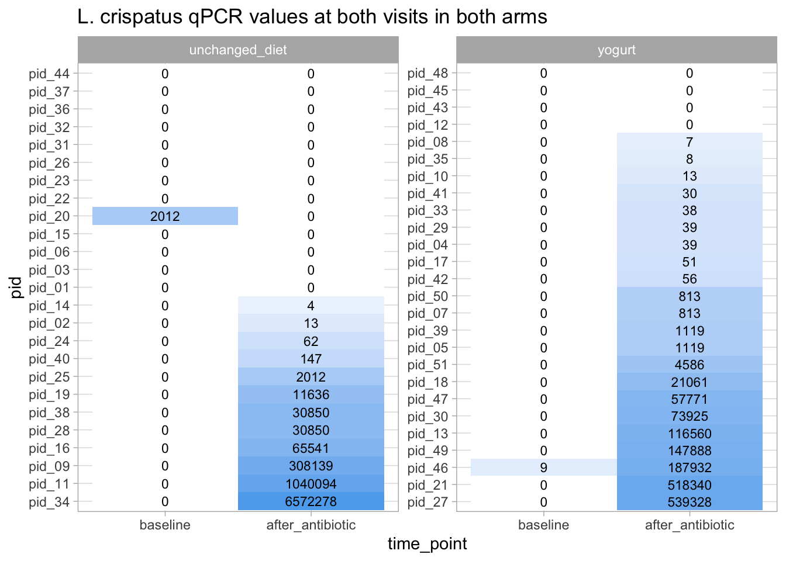

This document presents an example of analysis of the Group 1 dataset.
Study description
This is a randomized controlled trial to study whether yogurt consumption has an effect on the microbiome post antibiotic treatment. Absolute abundance of bacteria was measured by 3 qPCR assays (for total, L. crispatus, L. iners). Cytokine levels (in copies/ml of vaginal fluid) were also measured by Luminex. Data was collected at two timepoints, pre and post antibiotic treatment.
Checking if arms are balanced in terms of demographic variables
We first check if the randomization of participant didn’t lead to any unfortunate differences in terms of demographic/clinical variables between the two groups.
To do so, we load the demographic data table (`01_participant_metadata_yogurt.csv`), display the distribution of these variables per arm and create “Table 1”.
Rows: 51 Columns: 7
── Column specification ────────────────────────────────────────────────────────
Delimiter: ","
chr (5): pid, arm, birth_control, education, sex
dbl (2): days_since_last_sex, age
ℹ Use `spec()` to retrieve the full column specification for this data.
ℹ Specify the column types or set `show_col_types = FALSE` to quiet this message.
First 6 rows of the table:
demographic_data |>head() |>pander()
Table continues below
pid
arm
days_since_last_sex
birth_control
pid_01
unchanged_diet
2
no hormonal birth control
pid_02
unchanged_diet
4
Depoprovera
pid_03
unchanged_diet
3
no hormonal birth control
pid_04
yogurt
1
Depoprovera
pid_05
yogurt
5
Depoprovera
pid_06
unchanged_diet
9
no hormonal birth control
age
education
sex
28
grade 10-12, not matriculated
female
34
less than grade 9
female
32
grade 10-12, matriculated
female
30
grade 10-12, not matriculated
female
34
less than grade 9
female
27
grade 10-12, matriculated
female
Number of participants per arm:
demographic_data |>count(arm) |>pander()
arm
n
unchanged_diet
25
yogurt
26
Visualization of the demographic variables of interest by study arm
There are 4 variables that we are interested in comparing: age, days_since_last_sex, birth_control, and education.
Warning for variable 'days_since_last_sex':
simpleWarning in wilcox.test.default(x = DATA[[1L]], y = DATA[[2L]], ...): cannot compute exact p-value with ties
Warning for variable 'age':
simpleWarning in wilcox.test.default(x = DATA[[1L]], y = DATA[[2L]], ...): cannot compute exact p-value with ties
Characteristic
unchanged_diet, N = 251
yogurt, N = 261
p-value2
days_since_last_sex
6 (3, 10)
5 (3, 11)
0.8
birth_control
0.017
Depoprovera
8 (32%)
17 (65%)
no hormonal birth control
17 (68%)
9 (35%)
age
30.0 (28.0, 33.0)
31.0 (29.0, 32.8)
0.6
education
0.8
grade 10-12, matriculated
6 (24%)
4 (15%)
grade 10-12, not matriculated
9 (36%)
12 (46%)
less than grade 9
4 (16%)
5 (19%)
post-secondary
6 (24%)
5 (19%)
1 Median (IQR); n (%)
2 Wilcoxon rank sum test; Pearson’s Chi-squared test; Fisher’s exact test
The p-values are slightly different because, by default, the two packages use different tests. We note that in both cases, birth_control is flagged as unbalanced between the two groups. We may thus evaluate if this unbalance might explain any of the differences in the outcomes.
Research aim: Evaluating the influence of eating yogurt on the vaginal microbiota composition
Data exploration
The microbiota composition data is in 02_qpcr_results_yogurt.csv file.
Let’s open it to see how the microbiota composition has been characterized:
Rows: 102 Columns: 4
── Column specification ────────────────────────────────────────────────────────
Delimiter: ","
chr (1): sample_id
dbl (3): qpcr_bacteria, qpcr_crispatus, qpcr_iners
ℹ Use `spec()` to retrieve the full column specification for this data.
ℹ Specify the column types or set `show_col_types = FALSE` to quiet this message.
qpcr |>head() |>pander()
sample_id
qpcr_bacteria
qpcr_crispatus
qpcr_iners
UNCH092
3093064
0
26.84
UNCH042
8275
0
76.04
UNCH015
7532202
0
555
UNCH035
4794320
12.99
204309
UNCH019
5328344
0
107806
UNCH040
5804
0
121045
We see that we have qPCR data for total bacterial load, Lactobacillus crispatus, and Lactobacillus iners.
Let’s display the general distribution of these three quantities. To be able to display the data on the same graph, we can pivot_longer:
Warning in scale_x_log10(): log-10 transformation introduced infinite values.
Warning: Removed 74 rows containing non-finite outside the scale range
(`stat_bin()`).

Notice that we got a warning that the log transformation introduced infinite values. That’s because some values in L. crispatus and L. iners are 0 and log(0) = -\(\infty\).
These 0s might be a problem for the downstream analyses. There are different ways to deal with these 0s. Here, we’ll use a simple little trick: we replace the 0s by a value that is half of the smaller value otherwise observed.
Rows: 102 Columns: 4
── Column specification ────────────────────────────────────────────────────────
Delimiter: ","
chr (4): pid, time_point, arm, sample_id
ℹ Use `spec()` to retrieve the full column specification for this data.
ℹ Specify the column types or set `show_col_types = FALSE` to quiet this message.
sample_info |>head() |>pander()
pid
time_point
arm
sample_id
pid_25
baseline
unchanged_diet
UNCH001
pid_51
baseline
yogurt
YOG002
pid_33
baseline
yogurt
YOG003
pid_13
baseline
yogurt
YOG004
pid_37
after_antibiotic
unchanged_diet
UNCH005
pid_09
after_antibiotic
unchanged_diet
UNCH006
We transform the categorical variables into factors, and, when relevant, we define the order of the categories (it is relevant for time_point for example).
qpcr_long_si |>filter(time_point =="baseline") |>ggplot(aes(x = arm, y = qpcr_value_b |>log10(), fill = arm)) +geom_boxplot(outlier.shape =NA, alpha =0.75) +# setting "outlier.shape" to NA does not show the outliers. # we don't need to show them because with the geom_jitter below, we'll still see them.geom_jitter(width =0.2, height =0, size =0.75) +facet_grid(. ~ variable) +scale_fill_manual(values = arm_colors) +ggtitle("Distribution of qPCR values at BASELINE by arm") +guides(fill ="none")

It looks like almost no one had L. crispatus before intervention but that there might be a small difference in the L. iners amounts.
Let’s see if that difference is statistically significant. We use a non-parametric test to do that.
Warning: There were 3 warnings in `summarize()`.
The first warning was:
ℹ In argument: `wtest = wilcox.test(log10(qpcr_value_b) ~ arm)$p.value`.
ℹ In group 1: `variable = "bacteria"`.
Caused by warning in `wilcox.test.default()`:
! cannot compute exact p-value with ties
ℹ Run `dplyr::last_dplyr_warnings()` to see the 2 remaining warnings.
None of these differences are statistically significant: we do not reject the Null hypothesis that the microbiota composition (i.e., our outcomes of interest) at baseline is similar between the two groups.
(This is an equivalent of Table 1 but for the outcome of interest at baseline).
Results
We can now answer our questions.
Let’s first display our data to highlight the answers to our results.
We are interested in these changes at the "after_antibiotic" visit since that is after participants had both took the antibiotic and eaten the yogurt.
qpcr_long_si |>filter(time_point =="after_antibiotic") |>ggplot(aes(x = arm, y = qpcr_value_b |>log10(), fill = arm)) +geom_boxplot(outlier.shape =NA, alpha =0.75) +geom_jitter(width =0.2, height =0, size =0.75) +facet_grid(. ~ variable) +scale_fill_manual(values = arm_colors) +guides(fill ="none") +ggtitle("Distribution of qPCR values AFTER INTERVENTION by arm")

Visually, it looks like the yogurt might have had an effect on L. crispatus.
!!! NOTE !!! If we had ignored the zeros and done the same visualization using the original data, we would have seen something quite different:
qpcr_long_si |>filter(time_point =="after_antibiotic") |>ggplot(aes(x = arm, y = qpcr_value |>log10(), fill = arm)) +geom_boxplot(outlier.shape =NA, alpha =0.75) +# geom_jitter(width = 0.2, height = 0, size = 0.75) + # (you'll see that geom_jitter will still display the -infinite values at the very bottom of the plot) # but geom_boxplot is not able to show include them to the distribution.facet_grid(. ~ variable) +scale_fill_manual(values = arm_colors) +guides(fill ="none") +ggtitle("Distribution of qPCR values AFTER INTERVENTION by arm\nzeros EXCLUDED from the plot")
Warning: Removed 17 rows containing non-finite outside the scale range
(`stat_boxplot()`).

Let’s now compute the median values in both arms and test our hypotheses:
Warning: There were 3 warnings in `summarize()`.
The first warning was:
ℹ In argument: `wtest_p = wilcox.test(log10(qpcr_value) ~ arm)$p.value`.
ℹ In group 1: `variable = "bacteria"`.
Caused by warning in `wilcox.test.default()`:
! cannot compute exact p-value with ties
ℹ Run `dplyr::last_dplyr_warnings()` to see the 2 remaining warnings.
medians |>left_join(test_res) |>pander()
Joining with `by = join_by(variable)`
variable
median_log_unchanged_diet
median_log_yogurt
wtest_p
qval
bacteria
5.654
5.163
0.07192
0.1136
crispatus
-0.3036
2.328
0.07571
0.1136
iners
5.472
5.502
0.8876
0.8876
We see that, although there is a large difference between the two medians in the two arms for L. crispatus, none of these p-values are smaller than 1/20. So we do not reject any of the null hypotheses.
But because of this large difference in medians for L. crispatus, it might be interesting to examine the before/after L. crispatus values in a high resolution (i.e., visualize them for each participants).
qpcr_long_si |>filter(variable =="crispatus") |>arrange(time_point |>fct_rev(), -qpcr_value) |># the fct_rev() function allows to sort factor variables in reverse order than the order of the levels# this is because I want to order participant IDs by the qpcr values at the post-intervention visitmutate(pid = pid |>factor(levels =unique(pid))) |>ggplot(aes(x = time_point, y = pid, fill =log10(qpcr_value_b)) ) +geom_tile() +geom_text(aes(label = qpcr_value |>round()), size =3) +# geom text allows to print text in the vizfacet_wrap(arm ~ ., scales ="free") +scale_fill_gradient(low ="white", high ="steelblue2") +guides(fill ="none") +labs(title ="L. crispatus qPCR values at both visits in both arms")

So, we see, comparing the yogurt and the control group, that, in the yogurt arm, there are more people who ended up having at least someL. crispatus. Whether that’s enough to restore a healthy vaginal microbiota is something to discuss with microbiota experts so one could decide whether it would be worth designing a new, better powered, study to refine our understanding of the effects of eating yogurt.
Longitudinal visualization
So far, this analysis ignored the longitudinal nature of the data.
Let’s fix that and display the baseline - post-antibiotic trajectories for these three variables in both arms.
Visually, we don’t see consistent effects of the birth control on the outcomes.
Additional analyses
There are many additional analyses that could be performed on this data. For example, one could continue this analysis by looking at the impact of the intervention on the cytokines (in the fourth table).